Ben Oram's Portfolio. Welcome to my Portfolio of Architecture, Photography and Graphics.
Contact details are at the bottom of the page
Sort:
Layout:
-
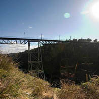
Bridge I -

Landscape I -
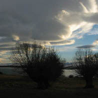
Lake I -

Lake II -
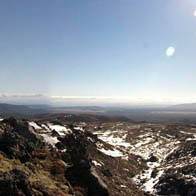
Mountain I -

Mountain II -
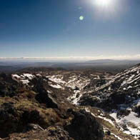
Mountain III -

Mountain V -
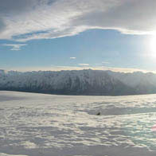
Mountain VI -

Quay I -

Quay II -
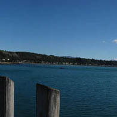
Quay III -

Quay IV -

River I -

Ship I -

Ship II -

Valley I -
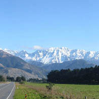
Valley II -

Rock I -
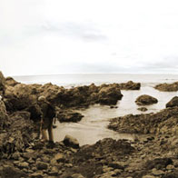
Beach I -
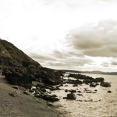
Beach II -

Beach III -

Beach IV -
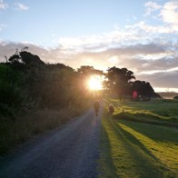
Beach V -

Peaks I -
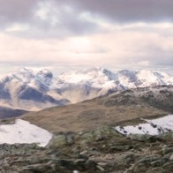
Peaks Pano Mountaintops I -

Peaks Ridge II -

Peaks Panorama I -
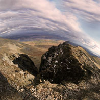
Peaks Panorama II -
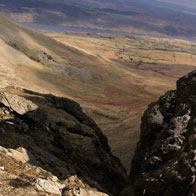
Peaks Pano Crevasse -
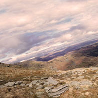
Peaks Panorama III -
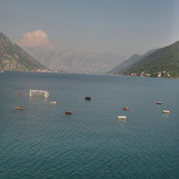
Lake 3 -

Derelict 2 -
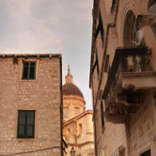
Dubrovnik Street 2 -

Dubrovnik Street 3 -
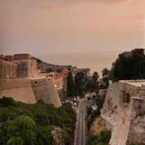
Dubrovnik Fortress I -
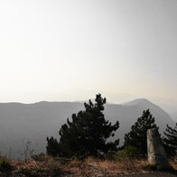
Montenegro Mountains 1 -
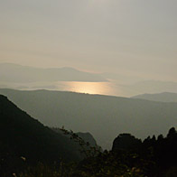
Montenegro Mountains II -

Montenegro Mountains III -

Sarajevo Concrete I -
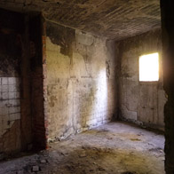
Sarajevo Concrete II -
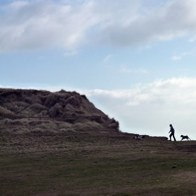
Land I -

E I -

E II -
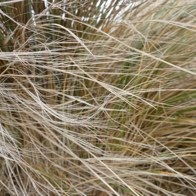
Grass I -

Hawtin I -

Hawtin II -
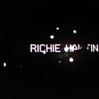
Hawtin III -

Hawtin IV -

Hawtin V -
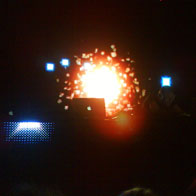
Hawtin VI -
aq e qreasfafafaFadfdsdfsdgdsgdsgdsgsdhsdhdgdsgs sd sd gds gf sd sd gdsgsd g -

Shards I -

Shards II -

Shards III -
Slicing Landscape Concept I -

Slicing Landscape Concept II -

Slicing Landscape Concept III -
Slicing Landscape Concept III -

Landscape Concept 1 -
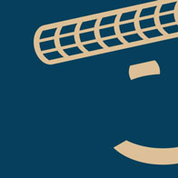
Happy Planet Pisa -
Happy Planet Eiffel -

Happy Planet Victoria -
Happy Planet Taj Mahal -
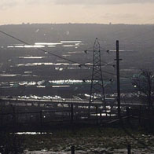
P1080739_moor_4 -
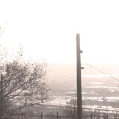
P1080731_moor_2 -

P1080687_moor_1 -

P1080609_weir -
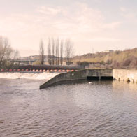
P1080617_weir_2 -

P1080780_bridge_1 -

P1080769_water_2 -

P1080758_water_1 -
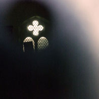
P1080656_church_3 -
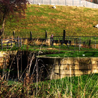
P1080633_canal_1 -

P1080601_broadcast_tower -

Introduction to Meshworks -
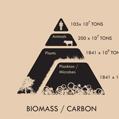
Global Biomass -
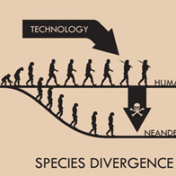
Humans and Evolution with Technology -

Humans in the Meshworks -
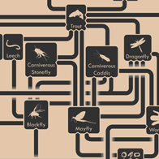
River Ecology -
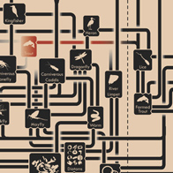
Farmed River Ecology -

Stability and Resilience -
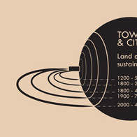
Towns and Intensive Agriculture -
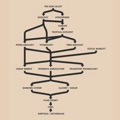
Mining Economy -

Mining Economy -

Valley Transect Layout -
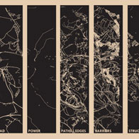
Valley Transect Analysis -

Valley Transect Analysis Combined -
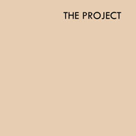
Project Aims -

Don Valley Flooding Map -
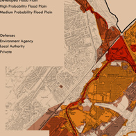
Don Valley Flooding Map Detail 1 -

002 Flood Concept -

004 Project Components -

006 Beaver Locations -

008_prototype_site -

009_prototype_drawing -

Prototype No. 1 - 1:10 -

Prototype No. 1 - 1:10 -
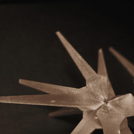
Prototype No. 1 - 1:10 -

Prototype No. 1 - 1:10 -
Prototype No. 1 - 1:10 -

021_on_snow_render -
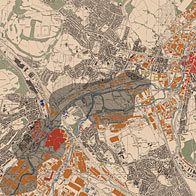
014 Don Valley Sites -

016 Don Valley Sites Detail -
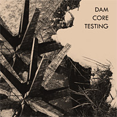
017 Tetrapod Tests -

018 Overland Flows -

018 Overland Flows Detail -
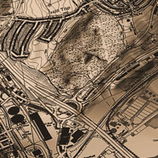
019 Prototype Site Contours -
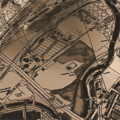
019 Prototype Site Contours Detail -
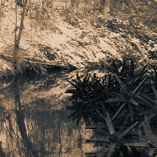
021 Water Plain 1 -
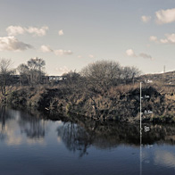
090 Canal 1 -

091 Canal II -

092 Centenary Way -

093 Centenary Way II -

099_clogging_test_1 -

099_clogging_test_2 -

099_clogging_test_3 -
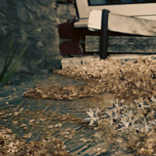
099_clogging_test_4 -

005_flooding_rotherham -
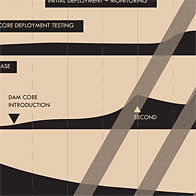
013_project_staging -

020_biodegradable_concrete -

026_core_disolving -

030_programme_2020 -

031_programme_2050 -
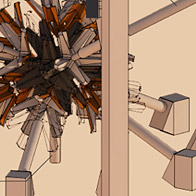
037_casting_machine_v2 -

038_casting_machine_v3 -
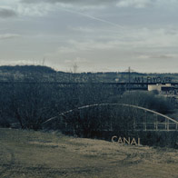
001_site_1_sm_txt -

001_site_1_sm_txt_2 -

002_site_2_sm_crop_3 -

002_site_2_sm_crop_2 -
002_site_2_sm_crop_1 -
080 Roof Detail Cutaway -

026 Oxbow / Helicoidal Flow Diagram 1 -

081_fabric_envelope_det_1 -

view_from_M1_p1 -
view_from_M1_p2 -

view_from_M1_p3 -
075_labs_exploded_facade -

076_wall_cutaway -
077_labs_after_decay -

078_factory_exploded_axo -

060_core_prototypes -
091_view_of_bridge -

PANO:pano_weta_factory_wall -

PANO:pano_weta_factory_bridge -

Deleuze and Guatarri - Views on Power -

Ruined Westminster -

FPTP vs STV in the 2005 Election -

FPTP Bar Majority Diagram -

Uk National Public Sector Borrowing -

Legislation Route Diagram -

Spatial Principles -

Built Concepts -

Uk Government Structure -

The Surrounding of Parliament -

Perspective Section Through the Palace -

Exploded Diagram of New Chamber -

1st Floor Overall Plan -

1st Floor Plan -

2nd Floor Overall Plan -

2nd Floor Plan -

3rd Floor Overall Plan -

3rd Floor Plan -

Long Section Through Chamber -

Long Section Through Chamber - Detail -

Short Section Through Chamber - Detail -

Short Section Through Chamber -

View From Press Balcony -

Section Cut Through Chamber -

Detail Section -

Precast Concrete Structure -

View From Public Balcony -

View From Floor -

PANO:pano_chamber_floor -

PANO:pano_chamber_balc -

PANO:parliament_lobby_1_pano -

PANO:parliament_lobby_1_pano -

Glasgow Car Hire - Arch Detail -
Glasgow Car Hire - Facade 1 -
VIDEO Introduction to Dance Centre -
Rotherham Dance - Bridge -

Rotherham Dance - Cable Connector -

Rotherham Dance - Night View -

Rotherham Dance - Step Detail 2 -

Pont Neuf - Canopy Exploded -
Sheffield Butterfly Interior -

Sheffield Butterfly Interior -
Sheffield Butterfly Exploded


{kind=link}
{kind=link}
{kind=link}
{kind=link}
{kind=link}
{kind=link}
{kind=link}
{kind=link}
{kind=link}
{kind=link}
{kind=link}
{kind=link}
{kind=link}
{kind=link}
{kind=link}
{kind=link}
{kind=link}
{kind=link}
{kind=link}
{kind=link}
{kind=link}
{kind=link}
{kind=link}
{kind=link}
{kind=link}
{kind=link}
{kind=link}
{kind=link}
{kind=link}
{kind=link}
{kind=link}
{kind=link}
{kind=link}
{kind=link}
{kind=link}
{kind=link}
{kind=link}
{kind=link}
{kind=link}
{kind=link}
{kind=link}
{kind=link}
{kind=link}
{kind=link}
{kind=link}
{kind=link}
{kind=link}
{kind=link}
{kind=link}
{kind=link}
{kind=link}
{kind=link}
{kind=link}
{kind=link}
{kind=link}
{kind=link}
{kind=link}
{kind=link}
{kind=link}
{kind=link}
{kind=link}
{kind=link}
{kind=link}
{kind=link}